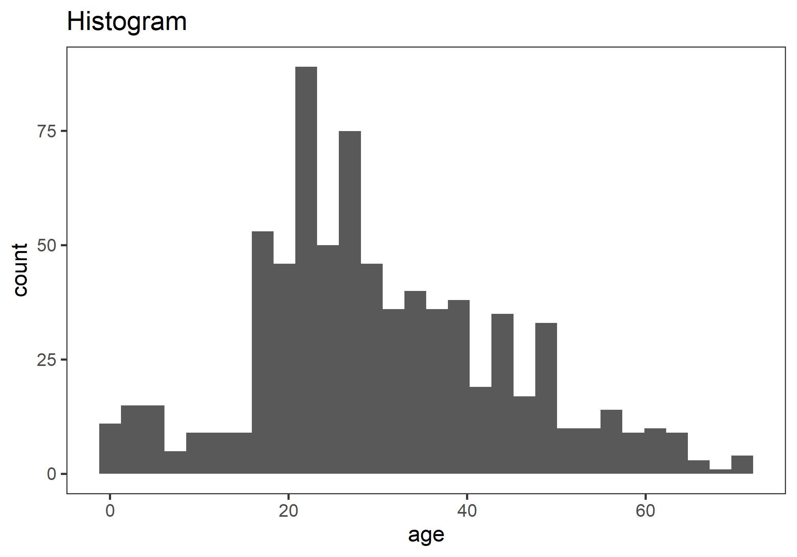
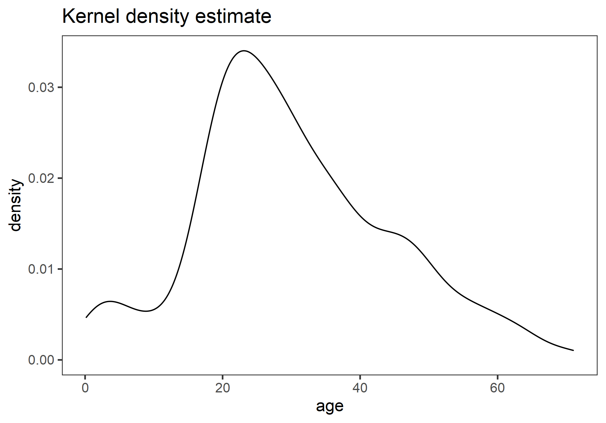
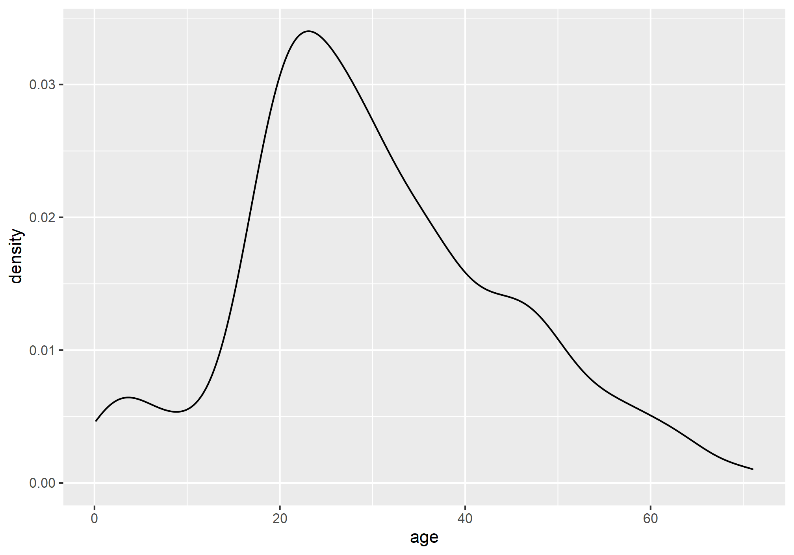
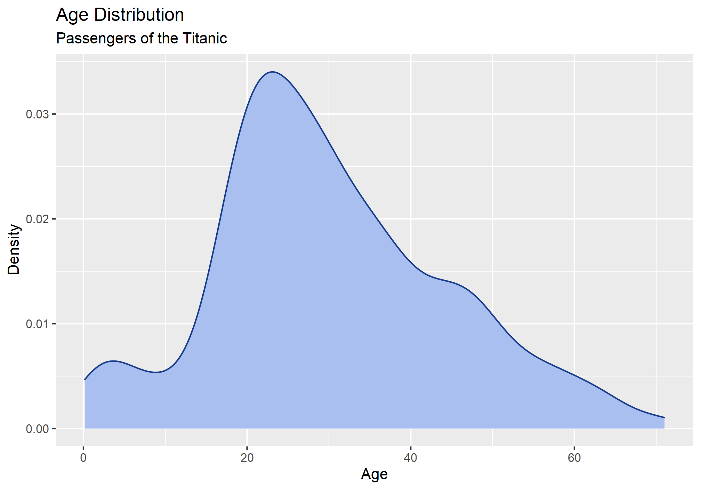
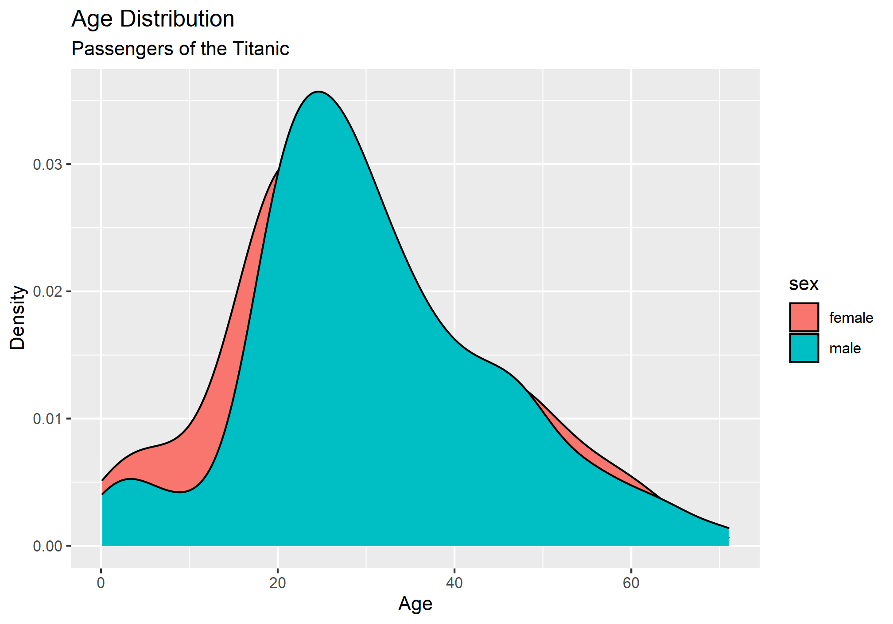
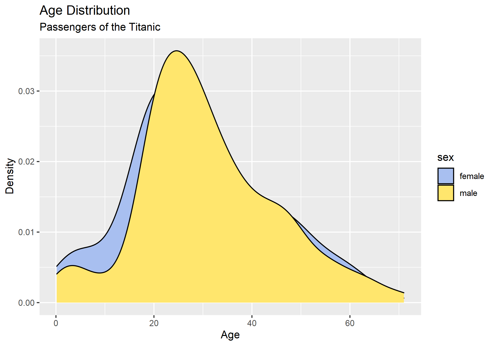
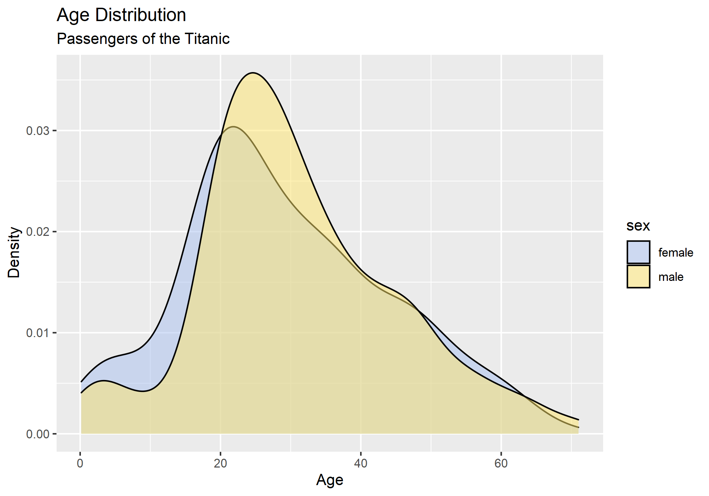
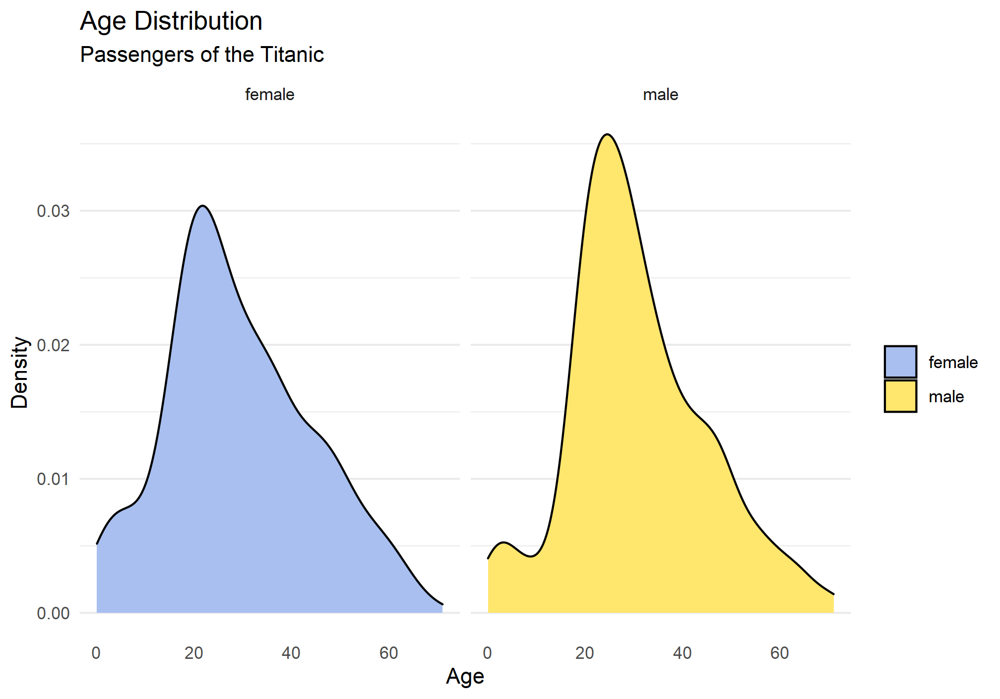
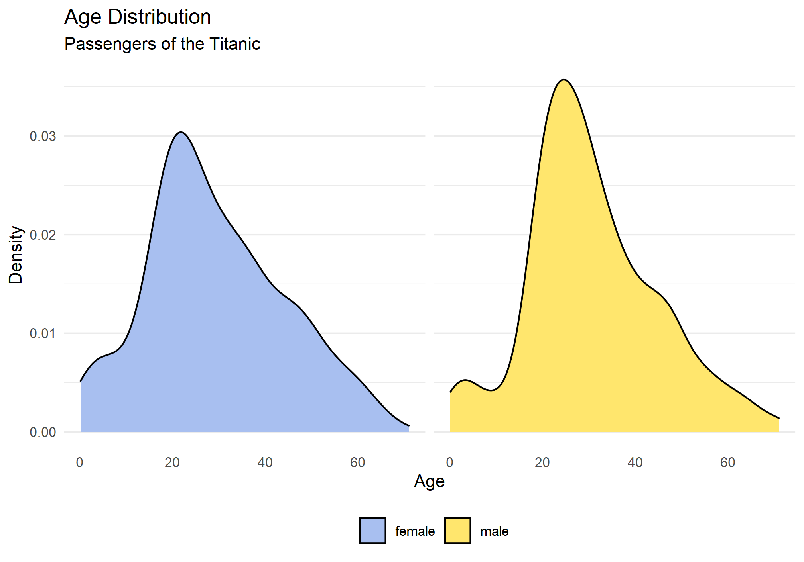
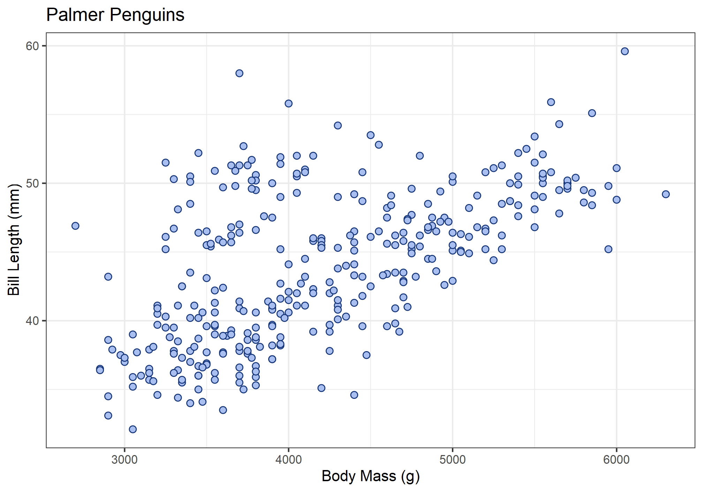

tl;dr working with data tables, visualizing densities, calculating bivariate statistics, and fitting linear models.
This lab will guide you through the process of
data.frame()nrow(), ncol(), and names()<table>[[<column>]] and <table>$<column>lm() functionsummary()We will be using the following packages:
To install these packages, run the following code in your console:
install.packages(
c("archdata", "ggplot2", "palmerpenguins", "viridis")
)Note: You should not install.packages() in an Rmd document. Use that function in your R console instead. Then use library() as part of the preamble in your Rmd document to check packages out of the library and use them in that R session. This should always go at the start of your document!
library(archdata)
library(ggplot2)
library(palmerpenguins)
library(viridis)cars
datasetsDartPoints
archdataOxfordPots
penguins
palmerpenguinstitanic
Elements of a Data Table
For almost any statistical analysis you might want to conduct in R, you will work with rectangular or tabular data, data that comes as collections of values organized into rows and columns of equal length. To avoid possible misunderstandings, let’s define some key terms for talking about data tables. Specifically, we will adopt the following conventions:
Any table of data that satisfies these rules is called tidy data. It is important to note, of course, that the opposite of tidy data is not necessarily messy data, for data can come in many formats (sound and video, for example). However, when we want to conduct some statistical analysis, like building a linear model of our data, we will almost certainly want our data to be tidy. To learn more about this concept of tidy data, you can read up on it in the book R for Data Science, which is available for free online.
To create a tidy data table, we will use the data.frame() function. Here, for example, is how we would create the table above:
projectiles <- data.frame(
type = c("Elko", "Rosegate", "DSN", "Elko", "Clovis"),
length = c(2.03, 1.4, 1.9, 2.1, 3.3),
width = c(0.8, 0.4, 0.3, 0.7, 0.95),
height = c(3.23, 2.4, 1.29, 2.7, 4.15)
)
projectiles
## type length width height
## 1 Elko 2.03 0.80 3.23
## 2 Rosegate 1.40 0.40 2.40
## 3 DSN 1.90 0.30 1.29
## 4 Elko 2.10 0.70 2.70
## 5 Clovis 3.30 0.95 4.15Note that the values (or measurements) contained in each variable are wrapped in the c() function (short for concatenate). This variable tells R that all these values belong to this one variable. Each variable in turn is an argument to data.frame() having the form <variable> = c(<value-1>, <value-2>, ..., <value-n>).
When you want to know what variables a table includes, you can use the name() function.
names(projectiles)
## [1] "type" "length" "width" "height"If you want to know how many variables or observations the table has, you can use nrow() and ncol() respectively.
# number of observations
nrow(projectiles)
## [1] 5
# number of rows
ncol(projectiles)
## [1] 4Sometimes, you will want to extract a variable from a table. To do that, you can use double brackets, <table>[[<variable>]], or the dollar-sign operator, <table>$<variable>.
projectiles[["type"]]
## [1] "Elko" "Rosegate" "DSN" "Elko" "Clovis"
projectiles$length
## [1] 2.03 1.40 1.90 2.10 3.30Note that you can and often will want to assign these to their own objects, so you can use them again later.
p_type <- projectiles[["type"]]
p_length <- projectiles$lengthpenguins table with names().nrow() and ncol().bill_length_mm variable from this table and assign it to an object called bill_length. Do the same for bill_depth_mm and call it bill_depth. You can use either <table>[[<variable>]] or <table>$<variable>.Note! Before you work through this section, add the following line of code to your Rmd document for this lab and run it. If you have a stable internet connection, you can actually use read.csv() to download tables that are stored online, and we’re using that here to get data on the Titanic.
titanic <- read.csv("https://raw.githubusercontent.com/wilkelab/SDS375/master/datasets/titanic.csv")Here you will learn how to create a kernel density estimate (KDE) plot using ggplot() and geom_density(). A KDE or “density” plot is similar to a histogram in that it seeks to show the distribution of a continuous random variable. It differs, however, in the way it goes about doing that. To see how they differ, have a look at these two examples. The one on the left is a histogram, the one on the right a density plot. Both, however, represent the same data.

There are two big differences here. First, a histogram shows raw counts, a KDE the proportions (or “density”), with total area under the curve summing to one. Second, a histogram discretizes the data using bins. A KDE is smooth and continuous. In effect, the KDE approach draws a normal distribution (called a kernel) around each data point the variable contains with mean equal to the data point’s value and standard deviation (called the bandwidth) set to some arbitrary value. The kernels are then summed to produce a curve like the one above. The bandwidth is similar in spirit to the bin width.
As with the histogram, we specify a density geometry for ggplot using geom_density().
ggplot(titanic, aes(age)) +
geom_density()
Again, we can specify different aesthetics like fill and color and update the labels with labs().
ggplot(titanic, aes(age)) +
geom_density(
fill = "#A8BFF0", # <--- HEX color code
color = "#183C8C"
) +
labs(
x = "Age",
y = "Density",
title = "Age Distribution",
subtitle = "Passengers of the Titanic"
)
We can also map these aesthetics to other variables like the sex of the passenger.
ggplot(titanic, aes(age, fill = sex)) +
geom_density() +
labs(
x = "Age",
y = "Density",
title = "Age Distribution",
subtitle = "Passengers of the Titanic"
)
And, we can change the default fill colors using scale_fill_manual(), too.
ggplot(titanic, aes(age, fill = sex)) +
geom_density() +
scale_fill_manual(
values = c("#A8BFF0", "#FFE66D")
) +
labs(
x = "Age",
y = "Density",
title = "Age Distribution",
subtitle = "Passengers of the Titanic"
)
In this case, however, it’s hard to see where the two distributions overlap, which makes it hard to compare them. One way to fix this is to change the opacity of the fill color using the alpha() function (note that the alpha or transparency of a color can range from 0 to 1.).
ggplot(titanic, aes(age, fill = sex)) +
geom_density() +
scale_fill_manual(
values = alpha(c("#A8BFF0", "#FFE66D"), 0.5)
) +
labs(
x = "Age",
y = "Density",
title = "Age Distribution",
subtitle = "Passengers of the Titanic"
)
This is still a little hard to read, so let’s try faceting instead of alpha. Let’s also drop the background vertical grid lines using a theme. At the same time, we’ll go ahead and drop the label “sex” from the legend as that should be obvious from the key. We do that by setting name = NULL in scale_fill_manual().
ggplot(titanic, aes(age, fill = sex)) +
geom_density() +
scale_fill_manual(
name = NULL,
values = c("#A8BFF0", "#FFE66D")
) +
labs(
x = "Age",
y = "Density",
title = "Age Distribution",
subtitle = "Passengers of the Titanic"
) +
facet_wrap(~sex) +
theme_minimal() +
theme(
panel.grid.major.x = element_blank(),
panel.grid.minor.x = element_blank(),
)
Notice that the facet labels are redundant with the legend key here, so let’s remove those, too. We do that by setting the theme arguments strip.background and strip.text to element_blank(). Finally, we can move the legend to the bottom of the plot and make it horizontal with legend.position and legend.direction respectively.
ggplot(titanic, aes(age, fill = sex)) +
geom_density() +
scale_fill_manual(
name = NULL,
values = c("#A8BFF0", "#FFE66D")
) +
labs(
x = "Age",
y = "Density",
title = "Age Distribution",
subtitle = "Passengers of the Titanic"
) +
facet_wrap(~sex) +
theme_minimal() +
theme(
legend.position = "bottom",
legend.direction = "horizontal",
panel.grid.major.x = element_blank(),
panel.grid.minor.x = element_blank(),
strip.background = element_blank(),
strip.text = element_blank()
)
ggplot() and geom_density(). Then make all of the following changes:
species to the fill aesthetic.labs().scale_fill_viridis to use colorblind safe colors for the fill. Note! Species is a discrete or categorical variable, so make sure to set discrete = TRUE!facet_wrap() to facet by species.theme_minimal().Bivariate statistics provide simple measures of the relationship between two variables. Here we will learn how to calculate two such statistics in R: covariance and correlation. These allow us to describe the direction of the relationship (is it positive or negative?) and the strength of the relationship (is it strong or weak?). In this case, we’ll investigate the relationship between penguin body mass and bill length. We’ll be asking this:
Question: Is there a relationship between bill length and body mass? Is it positive or negative?
Before we do that, however, it is useful to visualize our data.
ggplot(penguins, aes(x = body_mass_g, y = bill_length_mm)) +
geom_point(
shape = 21,
fill = "#A8BFF0",
color = "#15357A",
size = 2
) +
labs(
x = "Body Mass (g)",
y = "Bill Length (mm)",
title = "Palmer Penguins"
) +
theme_bw()
What does this tell you about the relationship between these variables?
Covariance provides a measure of the extent to which two variables vary together. The sign of the covariance reflects a positive or negative trend, but not magnitude. To calculate this value in R, use the cov() function.
bill_length <- penguins$bill_length_mm
body_mass_g <- penguins$body_mass_g
cov(bill_length, body_mass_g, use = "complete.obs") # complete.obs means ignore NA values
## [1] 2606This is a positive number, meaning the relationship between bill length and body mass is positive (the one tends to increase as the other increases). The size of the number by itself is unhelpful, however, and cannot be used to infer anything about the strength of the relationship. That is because covariance is sensitive to the unit of measure. If, for example, we convert body_mass from grams to kilograms, we will get a different covariance statistic.
# convert to kilograms by dividing by 1000
body_mass_kg <- body_mass_g/1000
cov(bill_length, body_mass_kg, use = "complete.obs")
## [1] 2.61To remove units of measure and prevent resulting changes in the magnitude of the covariance, we can scale the covariance by the standard deviations of the samples. The resulting value is known as Pearson’s Correlation Coefficient, which ranges from -1 to 1.
cor(bill_length, body_mass_g, use = "complete.obs")
## [1] 0.595Just to demonstrate that this isn’t sensitive to units of measure, let’s see what happens when use body mass measures in kilograms.
cor(bill_length, body_mass_kg, use = "complete.obs")
## [1] 0.595There’s no change! In either case, the resulting coefficient is greater than zero, suggesting a positive trend, but is this value significantly different than zero? To answer that question, we can convert this coefficient to a t-statistic and compare it to a t-distribution. This is done with the cor.test() function. For this test, we have the following hypotheses:
And, of course, we must stipulate a critical value. In this case, we will stick with tradition:
\(\alpha = 0.05\)
So, now, here is our test:
cor.test(bill_length, body_mass_g, use = "complete.obs")
##
## Pearson's product-moment correlation
##
## data: bill_length and body_mass_g
## t = 14, df = 340, p-value <2e-16
## alternative hypothesis: true correlation is not equal to 0
## 95 percent confidence interval:
## 0.522 0.660
## sample estimates:
## cor
## 0.595In this case, you see that \(p < \alpha\), hence we reject the null hypothesis, meaning our coefficient estimate is significantly different than zero. There is, in other words, a positive relationship between body mass and bill length among the Palmer penguins.
penguins dataset, do all of the following:
In this section, we will learn how to fit a linear model to our data. We will look, specifically, at a scenario involving an experiment with cars recorded in the cars dataset. We want to know what kind of relationship there is between the distance (in feet) a car travels after the brakes are applied and the speed (in miles per hour) the car was going when the brakes were applied. We will doing this by fitting a linear model with the lm() function. Here are our hypotheses:
Before doing that, however, let’s discuss the formula syntax that the lm() function uses. To fit a model, we must first specify a formula. This involves three components: a predictor variable, the tilde ~, and a response variable. The syntax is this:
<response> ~ <predictor>
In the case of the cars data, that’s:
dist ~ speed
This can be read as saying, in effect, “distance as a function of speed.” Note that you do not have to put the variables in quotes or anything like that. It’s just the names of the variables separated by a tilde.
In addition to specifyfing the formula, we must also tell the lm() what dataset our observations are coming from. We do this by specifying the data argument. The whole function call looks like this:
cars_model <- lm(dist ~ speed, data = cars)
cars_model
##
## Call:
## lm(formula = dist ~ speed, data = cars)
##
## Coefficients:
## (Intercept) speed
## -17.58 3.93Here, the model estimates both the intercept and a coefficient of relationship between speed and distance.
A more informative report of the model is provided by the summary() function. In addition to reporting on the model coefficients, this will also conduct a t-test on each coefficient, evaluating whether they are significantly different than zero.
summary(cars_model)
##
## Call:
## lm(formula = dist ~ speed, data = cars)
##
## Residuals:
## Min 1Q Median 3Q Max
## -29.07 -9.53 -2.27 9.21 43.20
##
## Coefficients:
## Estimate Std. Error t value Pr(>|t|)
## (Intercept) -17.579 6.758 -2.60 0.012 *
## speed 3.932 0.416 9.46 1.5e-12 ***
## ---
## Signif. codes: 0 '***' 0.001 '**' 0.01 '*' 0.05 '.' 0.1 ' ' 1
##
## Residual standard error: 15.4 on 48 degrees of freedom
## Multiple R-squared: 0.651, Adjusted R-squared: 0.644
## F-statistic: 89.6 on 1 and 48 DF, p-value: 1.49e-12We’ll go over this summary() in more detail later. For now, note that it reports the coefficient “Estimate”, the t-statistic (or “t value”) for each coefficient estimate, and the p-value for the respective t-tests. In each case, the null hypothesis is that the coefficient is zero. A small p-value then gives us reason to reject the null and accept the coefficient estimate as significant. In this case, the p-value is very small, so we can accept both the intercept and speed coefficients. This tells us (as you might expect) that there is a significant positive relationship between the speed the car was going when it applied the brakes and the distance it traveled after applying the brakes.
penguins dataset, build a linear model of the relationship between bill length and bill depth.summary() function to your model. Are the coefficients significant?archdata package using data().
DartPointsOxfordPotsDartPoints dataset, make a kernel density plot of dart Length to visualize its distribution. Make sure to do all of the following:
Name (or type) to the fill aesthetic.labs().scale_fill_viridis to use colorblind safe colors for the fill. Note! Species is a discrete or categorical variable, so make sure to set discrete = TRUE!facet_wrap() to facet by Name (or type).theme_minimal().DartPoints dataset, calculate the covariance and correlation between dart length and width.
DartPoints dataset, build a linear model showing the relationship (if any) between the length and width of dart points. Be sure to do all of the following:
Length and Width using ggplot() and geom_point(). Hint: your aesthetic mapping should be aes(x = Width, y = Length).Length and the independent variable is Width.summary() to report the model.OxfordPots dataset, build a linear model showing the relationship (if any) between the percentage of Oxford Pots found on an archaeological site and the distance of that site from the city of Oxford. Be sure to do all of the following:
ggplot() and geom_point(). Hint: your aesthetic mapping should be aes(x = OxfordDst, y = OxfordPct).OxfordPct and the independent variable is OxfordDst.summary() to report the model.